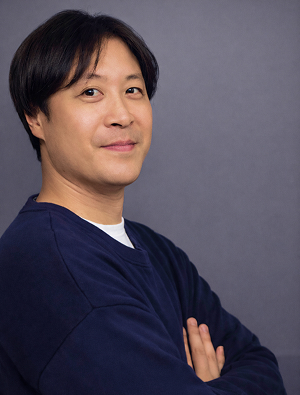

ABOUT
わたしについて

石原寛之
Hiroyuki Ishihara
- WEBデザイナー
- フロントエンドエンジニア
- WEBディレクター
- 1977年2月11日生まれ
- 神奈川県出身
- 国家資格 ウェブデザイン技能士2級 保有
大学在学中よりヤマト運輸株式会社にて契約社員として勤務し、卒業後も継続して従事。現場業務に加え、業務改善提案やチーム運営に主体的に取り組み、複数回の表彰を受けるとともに、グループリーダーとしてメンバー管理・育成を経験しました。早期から実務を通じて、業務遂行力とチームマネジメント力を培っています。
その後、より社会貢献性の高い仕事を志し、公務員試験に挑戦。資格の学校TACにて毎日13時間の学習に専念し、神奈川県上級試験では最終面接まで進みました。この期間に、目標達成に向けた継続力と自己管理能力を高い水準で習得しています。
一連の経験を通じて自身の適性とキャリアを見つめ直す中で、「成果が目に見える形で社会に価値提供できる分野」としてWEB業界に強い関心を持ち、デジタルハリウッドへ入学。体系的にデザインおよびフロントエンド技術を習得し、WEB業界へ転身しました。
2005年よりWEB業界に携わり、WEBデザイン、コーディング、WEBディレクションなど、20年以上にわたり幅広い業務を経験してまいりました。現在はWEBデザイナーとしての経験を活かしながら、HTML・CSS・JavaScript・jQueryを中心としたフロントエンド開発を主に担当しております。
前職では、美容・医療業界を中心に350社以上のWEBサイト制作に携わり、サブチームリーダーとして新人育成や品質管理を推進し、チーム全体の生産性および品質向上に貢献してきました。
現職では約19年にわたり、輸入車ディーラー（フェラーリ、ロールス・ロイス）をはじめ、大阪商工会議所、慶應義塾大学、中央大学、YAMAHA関連など、多様な業界の制作案件を担当。HTML / CSS / JavaScript / jQueryを用いた実装に加え、Figma・Photoshop・Illustratorによるデザイン制作、レスポンシブ対応、SEO施策まで幅広く対応し、品質とスピードを両立した開発を強みとしています。
WEBデザインでは、お客様のご要望を形にするだけでなく、ユーザー視点や集客効果を意識した設計を重視し、企業サイト、ランディングページ、バナー制作など、業種・ジャンルを問わず多様な制作に携わってきました。これまでPhotoshopを中心にデザイン制作を行ってきましたが、近年はFigmaを実務でも活用しております。
フロントエンド開発では、Figma、Adobe XD、Photoshop、Illustratorなどで作成されたデザインを忠実に再現するコーディングを得意としております。モバイル対応を含むレスポンシブデザインの実装に加え、SEOやアクセシビリティを意識したHTML構造の設計・実装にも積極的に取り組んでいます。
開発環境は主にWindowsで、Visual Studio CodeおよびDreamweaverを使用しています。
また、GitHubやVue.jsについては、DMM WEBCAMPのフロントエンドコースで学習し、現在もスキル向上と実務への活用を目指して学習を続けています。
これまでに培ってきた経験とスキルを活かし、ユーザーにとって使いやすく、クライアントにとって運用しやすいWEBサイト制作を通じて、プロジェクトに貢献していきたいと考えております。
CAREER
これまでの歩み
学歴
1997年4月
2001年3月
杏林大学 社会科学部 社会科学科
大学では法律・経済・政治・情報処理など社会科学全般を学び、プレゼミでは情報処理を選択、3年次には国際政治コースを専攻しました。
また、大学1年時から卒業後約1年間までヤマト運輸株式会社に契約社員として勤務し、グループリーダーとして業務に従事しました。業務では複数回の表彰を受けるなど成果を上げ、学業と仕事を両立しながら社会人としての基礎や責任感を身につけました。
2004年1月
2004年9月
デジタルハリウッド WEBデザイナー専攻
WEBデザイナーという職種がまだ一般的ではない時期からWEB制作に興味を持ち入学し、デザイン・コーディング・WEBディレクションを体系的に学びました。さらにPHP、WEBディレクション、カラーコーディネートなどの講義も追加で受講しました。
OJTでは、神奈川総合産業高等学校のWEBサイト制作にデザイナー・コーダーとして参加し、そのプロジェクトは新聞にも取り上げられました。
また、第47回逗子海岸花火大会のプロジェクトでは、逗子観光協会および逗子市役所をクライアントとして、プロジェクトリーダーとしてWEBサイトおよびポスター制作を総合的にディレクションし、チームをまとめながら実践的な制作経験を積みました。
2023年3月
2023年6月
DMM WEBCAMP フロントエンドコース
フロントエンドエンジニアとしての技術をさらに高めるために入学し、講師とのマンツーマン指導のもと学習しました。各チャプターの課題と最終課題の合格が修了条件となるカリキュラムの中で、仕事後や休日も継続して学習に取り組み、修了しました。
HTML、CSS、JavaScript、jQuery、Git、Vue.js、Bootstrap、Firebaseなど、現場で活用されるフロントエンド技術を体系的に習得しました。
職歴
2005年1月
2005年12月
株式会社テレウェイヴリンクス
（現：株式会社アイフラッグ）
WEBデザイナー、コーダーとして医療業界を中心としたWEBサイト制作に従事しました。Photoshop・Illustratorを用いたデザイン制作と、HTML・CSSによるコーディングを担当し、ユーザー導線や視認性を意識したサイト設計を行いました。また、クライアントからの更新依頼や運用サポートなど、サイト運営に関わる業務にも対応しました。クライアントの要望を的確にデザインへ反映し、品質と再現性を意識した制作を行うことで、安定したサイト運用に貢献しました。
2006年1月
2007年5月
株式会社ウェブ・ワークス
（現：トランスコスモス株式会社）へ転籍
WEBデザイナー、コーダー、WEBディレクターとして、美容業界を中心に350社以上のWEBサイト制作・運用に携わりました。要件定義、サイト設計、デザイン、コーディング、SEO対策、運用改善、カスタマーサポートまで一貫して担当しました。サブチームリーダーとして進行管理や新人教育にも従事し、チームの生産性向上に貢献しました。また制作統括チームの一員として、制作方針の策定や制作フローの改善、品質管理にも携わり、組織全体の制作品質向上に取り組みました。
2007年6月
現在
ウィルズオンライン株式会社
WEB業界で20年以上の経験を持ち、WEBデザインからコーディング、ディレクション、運用・保守まで一貫して対応してきました。ウィルズオンライン株式会社にて約19年間勤務し、HTML、CSS、JavaScript、jQueryを用いたフロントエンド開発を中心に、Photoshop、Figma、Illustratorを活用したデザイン制作、レスポンシブ対応、SEOを意識したマークアップなど幅広い業務を担当しています。これまでにフェラーリやロールスロイスのディーラーサイト、大学関連サイト、YAMAHAオフィシャルサイトのページ制作など、業種を問わず多様なWebサイト制作に携わってきました。近年では獣医療情報サイトやECサイトの新規立ち上げ、WordPressを用いた大阪商工会議所関連サイトの制作・運用に参画し、デザイン、コーディング、ディレクションまで幅広く担当しています。Web制作の企画・設計から実装、運用まで柔軟に対応できる点を強みとしています。
STRENGTHS
わたしの強み
-
一貫制作力
WEBデザイン、コーディング、WEBディレクションまで、WEB制作に関わる工程を一貫して担当できる点が強みです。要件整理やサイト設計から、Photoshop・Figma・Illustratorを用いたデザイン制作、HTML・CSS・JavaScriptによるフロントエンド実装、公開後の運用改善まで幅広く対応してきました。各工程の役割を理解しているため、デザインと実装の両面から最適な提案が可能です。プロジェクト全体を見渡しながら、品質と効率を両立したWEB制作に貢献できます。
-
実務対応力
これまでに多くのWEBサイト制作・運用に携わり、多様な業種・規模の案件に対応してきました。クライアントの要望を的確に理解し、ユーザー視点や集客効果を意識したサイト設計・デザイン・実装を行うことを大切にしています。また、更新対応や運用サポートにも継続的に関わることで、実際の利用状況を踏まえた改善提案にも取り組んできました。豊富な実務経験を活かし、柔軟かつ安定した制作対応が可能です。
-
継続学習力
長年の実務経験に加え、常に新しい技術を学び続けている点も強みです。DMM WEBCAMPでフロントエンド技術を体系的に学び直し、HTML、CSS、JavaScript、Git、Vue.jsなどのモダンな開発環境を学習しました。現在も実務でFigmaを活用するなど、新しいツールや技術の習得に積極的に取り組んでいます。変化の早いWEB業界においても学習を継続し、実務へ取り入れながら自身のスキルを更新し続けています。
SKILLS
いまできること
-
HTML5
22年2か月
HTML5の構造タグを用いた意味のあるマークアップを行い、SEOやアクセシビリティを意識した構造設計でサイト構築が可能です。
-
CSS3
22年2か月
CSS3を用いたレイアウト設計やレスポンシブデザインの構築、アニメーション実装など、実務で幅広いコーディング経験があります。
-
JavaScript
18年9か月
基本文法を理解し、基本的なDOM操作やイベント処理を用いたスライダー・アコーディオン・タブ切り替えなどのUI実装ができます。
-
jQuery
18年9か月
実務でjQueryを使用し、ドロワーメニューやアコーディオン、スライダーなどのUI動作の実装・カスタマイズ経験があります。
-
Figma
2年1か月
現在はFigmaを使用し、Webサイトのデザイン制作を行い、レイアウト設計やUIを意識した設計で、見やすく使いやすいデザインを作成しています。
-
XD
4年9か月
他社制作のXDデザインデータをもとに、レイアウトや仕様を確認しながらデザインを正確に再現したコーディングが可能です。
-
Photoshop
22年2か月
Webサイトのデザイン制作、バナー作成、画像加工などをPhotoshopで行い、長年の実務で継続的に使用しています。
-
Illustrator
22年2か月
名刺やフリーペーパー裏表紙のデザイン制作実績があります。アイコン作成など基本的なグラフィック制作に対応可能です。
-
Visual Studio Code
3年1か月
現在のコーディング業務ではVisual Studio Codeをメインエディタとして使用し、拡張機能を活用しながら効率的に開発を行っています。
-
Dreamweaver
22年2か月
長年Dreamweaverを用いたコーディング経験があり、現在はVisual Studio Codeを中心に使用しつつ、Dreamweaverにも対応可能です。
-
WordPress
13年1か月
WordPressの基本構造を理解し、テーマや独自関数を用いた簡易的なサイト制作や記事更新や運用管理などの実務経験もあります。
-
Bootstrap
6年11か月
Bootstrapを活用したレスポンシブサイト制作の実務経験があり、PC・スマートフォン双方に最適化したWebサイト構築が可能です。
-
Vue.js
2年8か月
スクール学習でVue.jsの基本概念やコンポーネント設計の基礎を学習しました。実務経験はありませんが、継続して学習しています。
-
Git / GitHub
2年8か月
スクール学習にてGit / GitHubを使用し、ソース管理や課題コードの公開を経験しています。実務での活用に向け継続して学習しています。